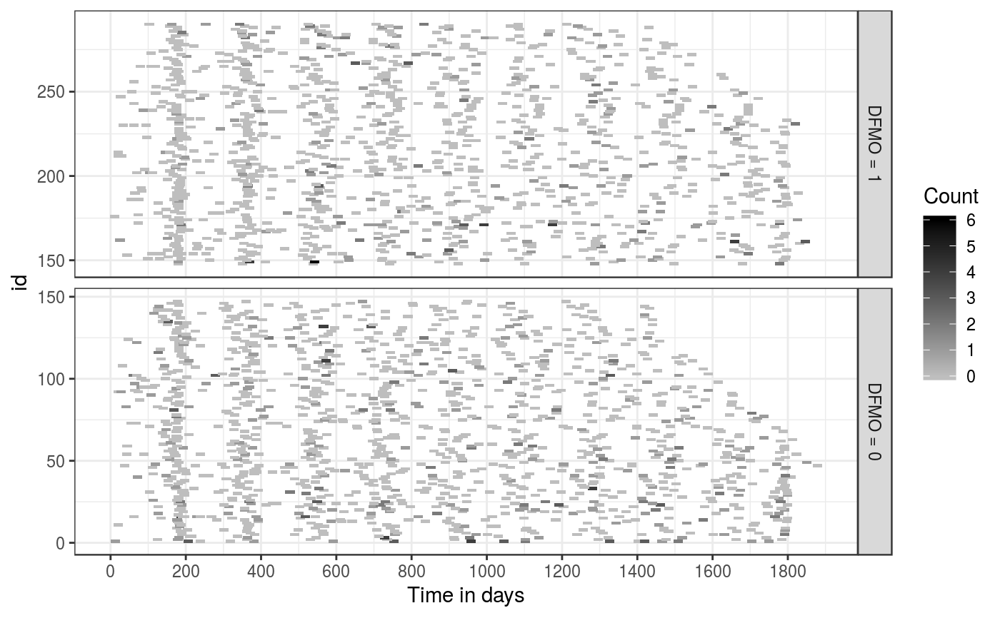

A data frame contains data on the recurrence of skin tumor. The original data is available in Table A.3. of Sun and Zhao (2013). This dataset contains records of 290 patients.
data(skinTumor)
This data frame contains the following columns:
id: patient id (repeated for each recurrence).
time: observation time.
age: patient's age at enrollment.
male: gender; male = 1, female = 0.
dfmo: treatment (DFMO) group = 1; placebo = 0.
priorTumor: number of prior tumor from diagnosis to randomization.
countBC: number of newly developed basal cell carcinomas tumors since last observation time.
countSC: number of newly developed squamous cell carcinomas tumors since last observation time.
count: number of newly developed non-melanoma tumors
since last observation time; this is equal to countBC + countSC.
Chiou, S., Xu, G., Yan, J., and Huang, C.-Y. (2017). Semiparametric estimation of the accelerated mean model with panel count data under informative examination times. Biometrics, to appear. <doi: 10.1111/biom.12840>.
Sun, J. and Zhao, X. (2013). Statistical Analysis of Panel Count Data. New York: Springer.
skiTum
data(skinTumor) library(ggplot2) ggplot(skinTumor, aes(time, id, width = 25, height = 2)) + geom_tile(aes(fill = count)) + theme_bw() + facet_grid(dfmo ~ ., scales = "free_y", as.table = FALSE, labeller = labeller(dfmo = function(x) paste("DFMO =", x))) + scale_fill_gradient(low = "grey", high = "black") + scale_x_continuous(breaks = seq(0, 2000, 200)) + labs(fill = "Count") + xlab("Time in days")